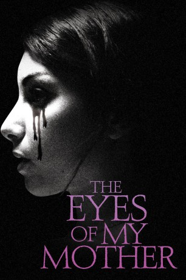
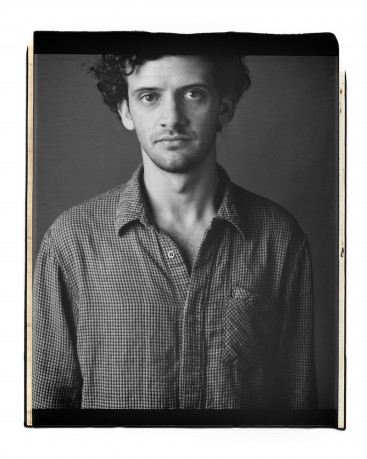

#6967 The Eyes of My Mother
 
 IMDB-Wertung: 6.2 / 10
IMDB-Wertung: 6.2 / 10  Metascore: 0
Metascore: 0 
In their secluded farmhouse, a mother, formerly a surgeon in Portugal, teaches her daughter, Francisca, to understand anatomy and be unfazed by death. One afternoon, a mysterious visitor shatters the idyll of Francisca's family life, deeply traumatizing the young girl, but also awakening unique curiosities. Though she clings to her increasingly reticent father, Francisca's loneliness and scarred nature converge years later when her longing to connect with the world around her takes on a dark form.
Jahr: 2016
Dauer: 75 Minuten
FSK: 16
Land: USA Studio: Magnet ReleasingTonspuren: DTS - ,
Untertitel: Deutsch,
Auflösung: 1080p (1920x808) Größe: 2949 MB
Genre: Horror, Drama
Regisseur: Nicolas Pesce
Drehbuch: Nicolas Pesce
Soundtrack:
Darsteller:
- Diana Agostini als Mother
- Olivia Bond als Young Francisca
-  Will Brill als Charlie
- Joey Curtis-Green als Antonio
- Flora Diaz als Lucy
- Kika Magalhães als Francisca
- Paul Nazak als Father
Datei: X:\2016(A-F)\Eyes of My Mother, The (2016, FSK16, 1920x808).mkv seit 15.09.2017
Festplatte: HD 2016(A-Z)
 Es gibt insgesamt 147 Filme in der Gruppe '2016(A-F)'
Es gibt insgesamt 147 Filme in der Gruppe '2016(A-F)'